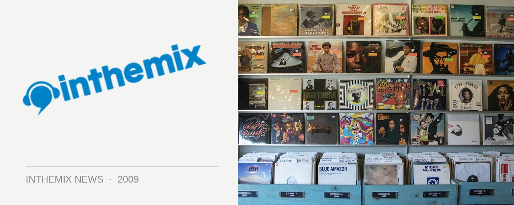

Aston Shuffle stepping up to mix Ministry of Sound's 'The Annual 2010'
ACT golden boys the Aston Shuffle are still flying high on the news they’ve taken the #3 spot in the 2009 Sony inthemix50, the highest spot ever for a Canberra act, and now they’ve got yet another feather to add to their cap with the news they’ve been called upon to perform mixing duties on what’s arguably the country’s most successful dance compilation. That’s right, the Aston Shuffle are compiling one of the discs for The Annual 2010, which will be a three-CD affair for the very first time.
The duo will be mixing the release alongside old favourites Goodwill and John Course. “We have been looking high and dry for new tunes and we have to say there is some amazing new music coming out,” the boys said on a mailout to their fans this week. “We can’t wait to get in there and start putting the tracks together.” Of late the boys have taken a bit of a break from the rigours of constant touring, spending time working on new music in the studio. This, of course, has led to a nasty cast of cabin fever, which they’ll shake off on the upcoming Annual national tour!
Ministry of Sound’s The Annual 2010, mixed by Aston Shuffle, Goodwill and John Course. Catch the ACT crazies on tour for the release:
31 Oct – Sydney, Arthouse
7 Nov – Coffs Harbour, Plantation
13 Nov – Cairns, TBA
14 Nov – Traralgon, Kay St
20 Nov – Maitland, The Brewery
21 Nov – Brisbane, Family
27 Nov – Melbourne, TBC
28 Nov – Adelaide, HQ
4 Dec – New York, Launceston
11 Dec – Perth, Capitol
12 Dec – Academy, Canberra,
18 Dec – Hobart, Syrup
26 Dec – Wollongong, Waves